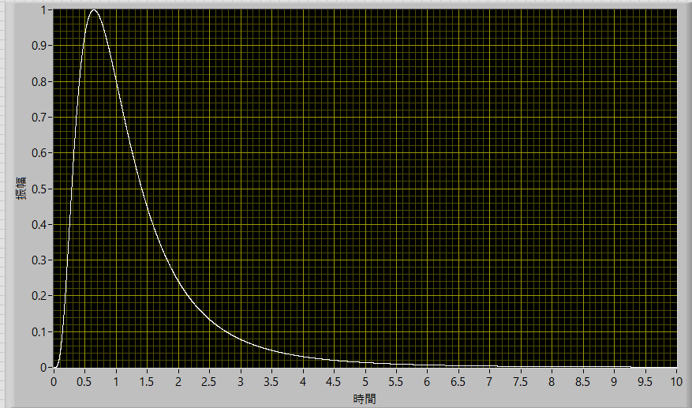
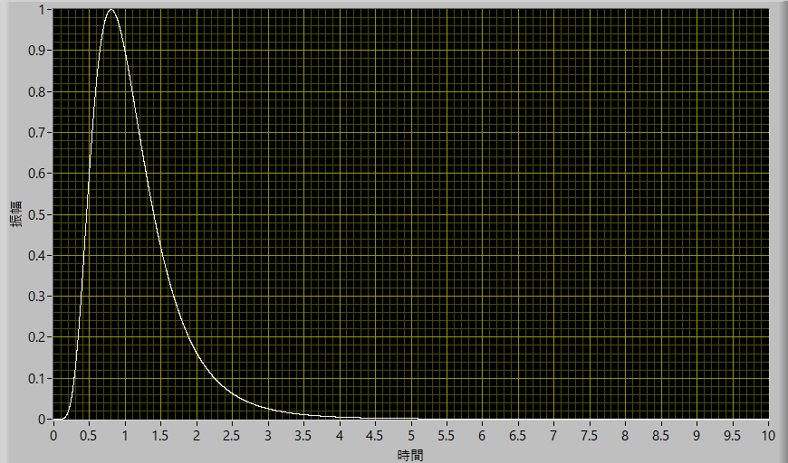
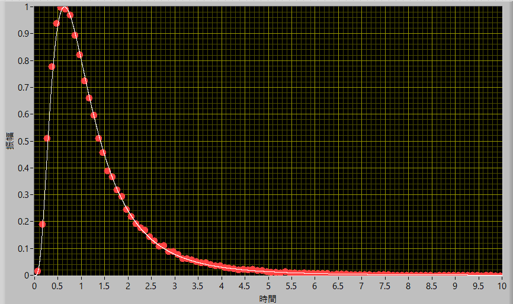
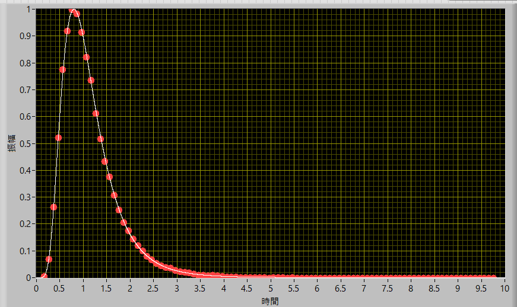

F検定-02
F分布の式を見てみると，
\(\Large \displaystyle f_X (x) = \frac{\Gamma \left( \frac{n_1 + n_2 }{2} \right)}{ \Gamma \left( \frac{n_1 }{2} \right) \Gamma \left( \frac{ n_2 }{2} \right)}
n_1^{ \frac{n_1}{2}} n_2^{ \frac{n_2}{2}}
\left( \frac{1}{ n_1 x + n_2} \right)^{ \frac{n_1 + n_2}{2}}
x^{ \frac{n_1}{2} -1}
\)
実は，各分散の値自体は関係なく，データ数のみの関数となっていることがわかります．
実際に，n1=10, n2=8とすると，

となることがわかります．
データ数を倍にして，n1=20, n2=16とすると，

となり，分布が狭まることがわかります．
つぎに，シミュレーション．ある分散値を設定して，正規分布を発生させます．その分布から上記の数だけ取り出して不偏分散を算出し，これを2セット用意します．その比の分布のヒストグラムにして表すと，
n1=10, n2=8

n1=20, n2=16

とよく合うことがわかります．
つぎに，実際に具体的なデータを用意してF検定をしてみましょう．